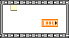

A sequence local terminal in a Stacked Sequence structure has not been assigned a value in any of the sequence frames. When this error occurs, the sequence local terminal appears as a blank rectangle.
To correct this error, wire a data input to the sequence local terminal in one of the sequence frames. After the sequence local terminal is wired, an arrow appears in the sequence local terminal rectangle.
Alternatively, you can right-click the sequence local terminal and select Remove from the shortcut menu to remove the sequence local terminal.